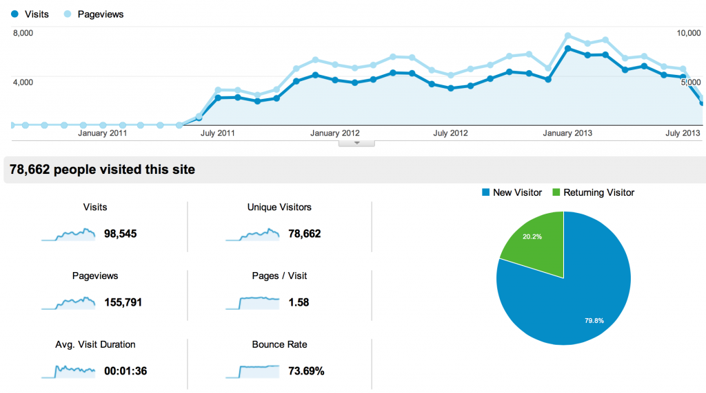

This site will no longer be updated after this. There will be no new blog posts, nor explorations of TVTropes or Topic Modeling or occasional interviews with indie videogame developers or webcomic authors.
My first post here was back in August 2010, and was a short review of some work out of the Spatial History Project (which since then became part of the Center for Spatial and Textual Analysis). Since then, I’ve had 241 blog posts (and nearly as many comments–that’s a joke) on subjects ranging from Gephi to Gephi to Gephi, with occasional forays into reviewing digital scholarship and exploring new media. I wrote not to be read but rather I was trying to maintain a sort of CV through blogging. The material produced in this kind of work is not amenable to traditional academic acknowledgment, so my blog became my record of gray output. In fact, I was convinced no one was reading this blog, except for some good-natured Stanford types like Matt Jockers and Glen Worthey, until DH11, when I realized I should probably turn on analytics.

It was exciting to find out that I had 3000 visits a month, and later seeing that grow to 5000-6000. Not exactly big numbers for the Internet, but pretty good for a WordPress site where the closest thing to a cat picture was a grainy shot of Richard Stallman.But this was always meant to be temporary, until there was a more established and centralized place for many people to post, and we finally have that here at Stanford. So, I will continue to write posts, but from now on publishing them on digitalhumanities.stanford.edu, where it’s my hope that the growing DH community at Stanford will coalesce and grow.
I’ll sign off with a link to my favorite piece on this site: Tecmo Bo Jackson as subject for the 2011 Digital Humanities Conference poster, and a reminder from BrokeP: “We think the internet is real.”